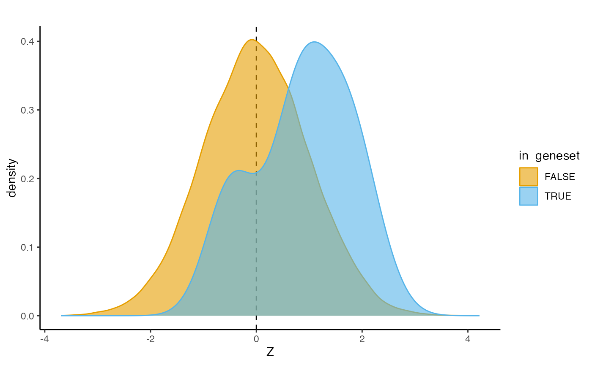

GSA.RmdSome output will be written during the tutorials, please change
outdir, defined below to your preferred directory:
outdir <- tempdir()a geneSetList() is a class for storing gene sets (+
metadata) and several methods for working with them.
Gene set lists can be generated from multiple sources, currently the following formats are supported:
The buildGeneSet() function can be used to load in data
from one of the formats described above. For example, below we build a
genesetlist based on a MSigDB GMT file
including Gene Ontology (molecular function) terms:
## Build a geneSetList from a gmt-file
genesetlist <- buildGeneSet(gmtpath = "data/c5.go.mf.v2023.2.Hs.symbols.gmt")
# Check genesets:
genesetlist## geneSetList
## Contains 1799 sets## [1] "GOMF_1_4_ALPHA_OLIGOGLUCAN_PHOSPHORYLASE_ACTIVITY"
## [2] "GOMF_1_ACYLGLYCEROPHOSPHOCHOLINE_O_ACYLTRANSFERASE_ACTIVITY"
## [3] "GOMF_1_ALKYL_2_ACETYLGLYCEROPHOSPHOCHOLINE_ESTERASE_ACTIVITY"
## [4] "GOMF_1_PHOSPHATIDYLINOSITOL_3_KINASE_ACTIVITY"
## [5] "GOMF_1_PHOSPHATIDYLINOSITOL_3_KINASE_REGULATOR_ACTIVITY"
## [6] "GOMF_1_PHOSPHATIDYLINOSITOL_4_5_BISPHOSPHATE_3_KINASE_ACTIVITY"Alternatively, custom genesets can be provided like so:
genesets_custom <- list(
"ALS_genes" = c("SOD1", "NEK1", "FUS"),
"PD_genes" = c("LRRK2", "GBA", "SNCA")
)
genesetlist_custom <- buildGeneSet(
genesets_custom
)
genesetlist_custom## geneSetList
## Contains 2 setsSome basic geneSetList methods:
length(genesetlist)## [1] 1799## GOMF_1_4_ALPHA_OLIGOGLUCAN_PHOSPHORYLASE_ACTIVITY
## 5
## GOMF_1_ACYLGLYCEROPHOSPHOCHOLINE_O_ACYLTRANSFERASE_ACTIVITY
## 8
## GOMF_1_ALKYL_2_ACETYLGLYCEROPHOSPHOCHOLINE_ESTERASE_ACTIVITY
## 8
## GOMF_1_PHOSPHATIDYLINOSITOL_3_KINASE_ACTIVITY
## 10
## GOMF_1_PHOSPHATIDYLINOSITOL_3_KINASE_REGULATOR_ACTIVITY
## 16
## GOMF_1_PHOSPHATIDYLINOSITOL_4_5_BISPHOSPHATE_3_KINASE_ACTIVITY
## 7## $rvatVersion
## [1] "0.3.1"
##
## $source
## [1] "data/c5.go.mf.v2023.2.Hs.symbols.gmt"
##
## $creationDate
## [1] "2024-11-20 15:05:29"
genesetlist[[2]]## An object of class "geneSet"
## Slot "geneSetName":
## [1] "GOMF_1_ACYLGLYCEROPHOSPHOCHOLINE_O_ACYLTRANSFERASE_ACTIVITY"
##
## Slot "units":
## [1] "LPCAT1,LPCAT2,LPCAT3,LPCAT4,MBOAT1,MBOAT2,PRDX6,TAFAZZIN"
##
## Slot "w":
## [1] "1,1,1,1,1,1,1,1"
##
## Slot "metadata":
## [1] "https://www.gsea-msigdb.org/gsea/msigdb/human/geneset/GOMF_1_ACYLGLYCEROPHOSPHOCHOLINE_O_ACYLTRANSFERASE_ACTIVITY"
genesetlist[1:3]## geneSetList
## Contains 3 sets## $GOMF_1_4_ALPHA_OLIGOGLUCAN_PHOSPHORYLASE_ACTIVITY
## [1] "MTAP" "PYGB" "PYGL" "PYGM" "TYMP"
##
## $GOMF_1_ACYLGLYCEROPHOSPHOCHOLINE_O_ACYLTRANSFERASE_ACTIVITY
## [1] "LPCAT1" "LPCAT2" "LPCAT3" "LPCAT4" "MBOAT1" "MBOAT2" "PRDX6"
## [8] "TAFAZZIN"
##
## $GOMF_1_ALKYL_2_ACETYLGLYCEROPHOSPHOCHOLINE_ESTERASE_ACTIVITY
## [1] "ASPG" "LCAT" "PAFAH1B2" "PAFAH1B3" "PAFAH2" "PLA2G10" "PLA2G6"
## [8] "PLA2G7"
##
## $GOMF_1_PHOSPHATIDYLINOSITOL_3_KINASE_ACTIVITY
## [1] "ATM" "PIK3C2A" "PIK3C2B" "PIK3C2G" "PIK3C3" "PIK3CA" "PIK3CB"
## [8] "PIK3CD" "PIK3CG" "PIK3R3"
##
## $GOMF_1_PHOSPHATIDYLINOSITOL_3_KINASE_REGULATOR_ACTIVITY
## [1] "CCKBR" "CISH" "P3R3URF" "PIK3R1" "PIK3R2" "PIK3R3" "PIK3R5"
## [8] "PIK3R6" "SLA2" "SOCS1" "SOCS2" "SOCS3" "SOCS4" "SOCS5"
## [15] "SOCS6" "SOCS7"
##
## $GOMF_1_PHOSPHATIDYLINOSITOL_4_5_BISPHOSPHATE_3_KINASE_ACTIVITY
## [1] "IPMK" "PIK3C2A" "PIK3CA" "PIK3CB" "PIK3CD" "PIK3CG" "PIK3R6"The getGeneSet() method can be used to extract one or
more genesets from a geneSetList:
# Extract one specific geneset:
geneset <- getGeneSet(genesetlist,
geneSet = "GOMF_E_BOX_BINDING")
geneset[[1]]## An object of class "geneSet"
## Slot "geneSetName":
## [1] "GOMF_E_BOX_BINDING"
##
## Slot "units":
## [1] "AHR,ASCL1,ASCL2,ATOH1,ATOH7,ATOH8,BHLHA15,BHLHE22,BHLHE23,BHLHE40,BHLHE41,BMAL1,BMAL2,CIART,CLOCK,CRY1,FIGLA,GATA3,HAND2,HDAC1,HES1,HIF1A,MAX,MITF,MYBBP1A,MYC,MYF5,MYF6,MYOD1,MYOG,NEUROD1,NEUROD2,NEUROD4,NEUROD6,NEUROG1,NEUROG2,NEUROG3,NR1D1,OLIG1,OLIG2,OLIG3,PER1,PPARG,PRMT5,PTF1A,SCRT2,SCX,SNAI1,SNAI2,SREBF2,TAL1,TCF12,TCF15,TCF21,TCF3,TCF4,TFAP4,TWIST1,ZEB1"
##
## Slot "w":
## [1] "1,1,1,1,1,1,1,1,1,1,1,1,1,1,1,1,1,1,1,1,1,1,1,1,1,1,1,1,1,1,1,1,1,1,1,1,1,1,1,1,1,1,1,1,1,1,1,1,1,1,1,1,1,1,1,1,1,1,1"
##
## Slot "metadata":
## [1] "https://www.gsea-msigdb.org/gsea/msigdb/human/geneset/GOMF_E_BOX_BINDING"It can also be used to retrieve gene sets that contain one or more genes of interest:
# Extract all genesets that contain SOD1:
geneset = getGeneSet(genesetlist, unit = "SOD1")
head(names(geneset))## [1] "GOMF_ANTIOXIDANT_ACTIVITY"
## [2] "GOMF_COPPER_ION_BINDING"
## [3] "GOMF_GTPASE_BINDING"
## [4] "GOMF_OXIDOREDUCTASE_ACTIVITY"
## [5] "GOMF_PHOSPHATASE_BINDING"
## [6] "GOMF_PROTEIN_FOLDING_CHAPERONE_BINDING"Specific units/genes can also be dropped from the
geneSetList(), which is useful if you want to exclude top
genes for gene set analysis for example:
genesetlist_noSOD1 <- dropUnits(genesetlist, unit = "SOD1")Convert geneSetList() to a data.frame or a list:
## $GOMF_1_4_ALPHA_OLIGOGLUCAN_PHOSPHORYLASE_ACTIVITY
## [1] "MTAP" "PYGB" "PYGL" "PYGM" "TYMP"
##
## $GOMF_1_ACYLGLYCEROPHOSPHOCHOLINE_O_ACYLTRANSFERASE_ACTIVITY
## [1] "LPCAT1" "LPCAT2" "LPCAT3" "LPCAT4" "MBOAT1" "MBOAT2" "PRDX6"
## [8] "TAFAZZIN"
head(as.data.frame(genesetlist), 3)## geneSetName
## 1 GOMF_1_4_ALPHA_OLIGOGLUCAN_PHOSPHORYLASE_ACTIVITY
## 2 GOMF_1_ACYLGLYCEROPHOSPHOCHOLINE_O_ACYLTRANSFERASE_ACTIVITY
## 3 GOMF_1_ALKYL_2_ACETYLGLYCEROPHOSPHOCHOLINE_ESTERASE_ACTIVITY
## units w
## 1 MTAP,PYGB,PYGL,PYGM,TYMP 1,1,1,1,1
## 2 LPCAT1,LPCAT2,LPCAT3,LPCAT4,MBOAT1,MBOAT2,PRDX6,TAFAZZIN 1,1,1,1,1,1,1,1
## 3 ASPG,LCAT,PAFAH1B2,PAFAH1B3,PAFAH2,PLA2G10,PLA2G6,PLA2G7 1,1,1,1,1,1,1,1
## metadata
## 1 https://www.gsea-msigdb.org/gsea/msigdb/human/geneset/GOMF_1_4_ALPHA_OLIGOGLUCAN_PHOSPHORYLASE_ACTIVITY
## 2 https://www.gsea-msigdb.org/gsea/msigdb/human/geneset/GOMF_1_ACYLGLYCEROPHOSPHOCHOLINE_O_ACYLTRANSFERASE_ACTIVITY
## 3 https://www.gsea-msigdb.org/gsea/msigdb/human/geneset/GOMF_1_ALKYL_2_ACETYLGLYCEROPHOSPHOCHOLINE_ESTERASE_ACTIVITYThe IDs in a geneSetList() can be remapped using the
remapIDs() method to match those used in the analyses.
Below we remap the gene symbols to Ensembl IDs, based on a linker-file.
# Linker file mapping Entrez gene IDs to Ensembl IDs:
linker <- readr::read_tsv("data/Homo_sapiens.GRCh38.105.gene.txt.gz", show_col_types = FALSE)
linker <- linker[,c("gene_id", "gene_name")]
# note: the `duplicated_ids` parameter indicates what to do with IDs that map to multiple IDs
genesetlist_remapped <- remapIDs(genesetlist,
dict = linker[,c(2,1)],
targets = unique(rvbresults$unit),
duplicate_ids = "keep_first")## 15574/15682 IDs in the geneSetList are present in the linker file.
genesetlist_remapped[[1]]## An object of class "geneSet"
## Slot "geneSetName":
## [1] "GOMF_1_4_ALPHA_OLIGOGLUCAN_PHOSPHORYLASE_ACTIVITY"
##
## Slot "units":
## [1] "ENSG00000099810,ENSG00000100994,ENSG00000100504,ENSG00000068976,ENSG00000025708"
##
## Slot "w":
## [1] "1,1,1,1,1"
##
## Slot "metadata":
## [1] "https://www.gsea-msigdb.org/gsea/msigdb/human/geneset/GOMF_1_4_ALPHA_OLIGOGLUCAN_PHOSPHORYLASE_ACTIVITY"We have also implemented a gene set file structure
(geneSetFile()) akin to a varSetFile(), from
which gene sets can be loaded without loading the entire file to memory.
The buildGeneSet() function can convert a file in one of
the formats mentioned in geneSetList. Below
we build a GO and KEGG geneSetFile():
# build a genesetfile
buildGeneSet(gmtpath = "data/c5.go.mf.v2023.2.Hs.symbols.gmt",
output = paste0(outdir, "/genesetfile.txt.gz")
)
# connect
genesetfile <- geneSetFile(paste0(outdir, "/genesetfile.txt.gz"))
genesetfile## geneSetFile
## Path: /var/folders/cl/wvc0rvjx4vd5rzt2_fhpmfth0000gp/T//RtmpMoc1RL/genesetfile.txt.gz
## Sets: 1799Extract a gene set:
# extract a geneset from a genesetfile
genesetlist <- getGeneSet(genesetfile,
geneSet = c("GOMF_UBIQUITIN_LIKE_MODIFIER_ACTIVATING_ENZYME_ACTIVITY"))
listUnits(genesetlist[[1]])## [1] "ATG7" "MOCS3" "NAE1" "SAE1" "UBA1" "UBA2" "UBA3" "UBA5" "UBA6"
## [10] "UBA7"Convert to a geneSetList() (i.e. load all sets):
genesetlist <- as.geneSetList(genesetfile)Broadly, the GSA methods implemented in RVAT can be divided into competitive and self-contained tests, where the former tests whether genes in the gene set are more associated with the phenotype than genes outside the gene set, while the latter jointly tests whether genes in the gene set are associated with the phenotype without considering genes outside the set (de Leeuw et al. 2016). Because competitive GSA tests for an enrichment relative to the genes outside the gene set, it controls for polygenicity as well as biases such as confounding and technical variability. Self-contained tests, on the other hand, are generally more powerful but may result in inflated test-statistics in case of polygenicity or residual biases in the data. See (de Leeuw et al. 2016) for a brilliant review of GSA methods.
Currently the following competitive methods are implemented:
linear model (test = “lm”): tests whether gene set membership predicts higher gene-association scores. Allows for adjustment for covariates such as gene size and number of variants in a gene.
hypergeometric test (test = “fisher”): tests whether the proportion of P-values below the specified threshold is greater than the proportion outside of it.
In below example, we perform competitive gene set analysis using a linear model on gene burden results:
# Adjust for the number of variants in a gene
res <- rvbresults[rvbresults$test=="firth" &
rvbresults$varSetName == "ModerateImpact", ]
GSAresults <- geneSetAssoc(
res,
genesetlist,
covar = c("nvar"),
test = c("lm"),
minSetSize = 10,
maxSetSize = 500
)
topResult(GSAresults)## gsaResult with 10 rows and 11 columns
## geneSetName test covar threshold geneSetSize genesObs effect
## <Rle> <Rle> <Rle> <numeric> <numeric> <numeric> <numeric>
## 1 GOMF_MRNA_METHYLTRAN.. lm nvar NA 13 13 0.878627
## 2 GOMF_BMP_BINDING lm nvar NA 20 19 0.537316
## 3 GOMF_DYNEIN_LIGHT_IN.. lm nvar NA 28 28 0.419752
## 4 GOMF_DYNEIN_HEAVY_CH.. lm nvar NA 16 16 0.553052
## 5 GOMF_PROTEIN_KINASE_.. lm nvar NA 25 24 0.436416
## 6 GOMF_TRANSFERRIN_REC.. lm nvar NA 11 10 0.664977
## 7 GOMF_PHOSPHATIDYLCHO.. lm nvar NA 31 28 0.388610
## 8 GOMF_MONOATOMIC_ANIO.. lm nvar NA 95 87 0.213296
## 9 GOMF_LIGASE_ACTIVITY.. lm nvar NA 41 41 0.305862
## 10 GOMF_COA_HYDROLASE_A.. lm nvar NA 24 21 0.424778
## effectSE effectCIlower effectCIupper P
## <numeric> <numeric> <numeric> <numeric>
## 1 0.276810 0.4232922 Inf 0.00075271
## 2 0.229032 0.1605722 Inf 0.00949267
## 3 0.188903 0.1090181 Inf 0.01314612
## 4 0.249569 0.1425262 Inf 0.01335099
## 5 0.203871 0.1010619 Inf 0.01615762
## 6 0.315631 0.1457836 Inf 0.01757354
## 7 0.188720 0.0781772 Inf 0.01974526
## 8 0.107252 0.0368734 Inf 0.02337241
## 9 0.156014 0.0492282 Inf 0.02497780
## 10 0.217878 0.0663827 Inf 0.02561858The gene association scores can be visualized using the
densityPlot method, which compares the Z-scores for a given
gene set with the background, this can be useful to inspect whether the
association is driven by few genes or not:
densityPlot(res,
geneSet = "GOMF_MRNA_METHYLTRANSFERASE_ACTIVITY",
geneSetList = genesetlist)
Outlying gene association scores can be remedied by either setting Z-score cutoffs (i.e. all Z-scores exceeding these values will be set to the respective cutoff), or inverse normal transforming the Z-scores:
GSAresults_Zcutoffs <- geneSetAssoc(
res,
genesetlist,
covar = c("nvar"),
test = c("lm"),
minSetSize = 10,
maxSetSize = 500,
Zcutoffs = c(-4, 4) # lower and upper bounds
)
GSAresults_INT <- geneSetAssoc(
res,
genesetlist,
covar = c("nvar"),
test = c("lm"),
minSetSize = 10,
maxSetSize = 500,
INT = TRUE
)Conditional gene set analyses can be performed to testher whether
gene sets are associated independently with the phenotype of interest.
In the example below we condition the most significant geneset on the
top 10 most significant genesets. The result includes a
condition field, indicating for which gene set the given
was adjusted:
topresults <- topResult(GSAresults)
GSAresults_conditional <- geneSetAssoc(
res,
getGeneSet(genesetlist, topresults$geneSetName[1]),
condition = getGeneSet(genesetlist, topresults$geneSetName[2:10]),
covar = c("nvar"),
test = c("lm"),
minSetSize = 10,
maxSetSize = 500
)
GSAresults_conditional## gsaResult with 9 rows and 12 columns
## geneSetName test covar threshold geneSetSize genesObs effect
## <Rle> <Rle> <Rle> <numeric> <numeric> <numeric> <numeric>
## 1 GOMF_MRNA_METHYLTRAN.. lm nvar NA 13 13 0.879184
## 2 GOMF_MRNA_METHYLTRAN.. lm nvar NA 13 13 0.879127
## 3 GOMF_MRNA_METHYLTRAN.. lm nvar NA 13 13 0.879093
## 4 GOMF_MRNA_METHYLTRAN.. lm nvar NA 13 13 0.879132
## 5 GOMF_MRNA_METHYLTRAN.. lm nvar NA 13 13 0.879321
## 6 GOMF_MRNA_METHYLTRAN.. lm nvar NA 13 13 0.879593
## 7 GOMF_MRNA_METHYLTRAN.. lm nvar NA 13 13 0.879231
## 8 GOMF_MRNA_METHYLTRAN.. lm nvar NA 13 13 0.879130
## 9 GOMF_MRNA_METHYLTRAN.. lm nvar NA 13 13 0.878994
## effectSE effectCIlower effectCIupper P condition
## <numeric> <numeric> <numeric> <numeric> <character>
## 1 0.276776 0.423905 Inf 0.000746510 GOMF_BMP_BINDING
## 2 0.276789 0.423826 Inf 0.000747425 GOMF_COA_HYDROLASE_A..
## 3 0.276781 0.423806 Inf 0.000747489 GOMF_DYNEIN_HEAVY_CH..
## 4 0.276781 0.423846 Inf 0.000747119 GOMF_DYNEIN_LIGHT_IN..
## 5 0.276789 0.424021 Inf 0.000745611 GOMF_LIGASE_ACTIVITY..
## 6 0.276788 0.424294 Inf 0.000743074 GOMF_MONOATOMIC_ANIO..
## 7 0.276786 0.423936 Inf 0.000746358 GOMF_PHOSPHATIDYLCHO..
## 8 0.276783 0.423839 Inf 0.000747218 GOMF_PROTEIN_KINASE_..
## 9 0.276784 0.423702 Inf 0.000748516 GOMF_TRANSFERRIN_REC..Finally, instead of the linear model, a hypergeometric test (test =
“fisher”), can be performed if you’d like to tests whether the
proportion of P-values below a specified threshold is greater
than the proportion outside of it. The threshold parameter
specifies the P-value cutoff to define significant genes:
GSAresults_fisher <- geneSetAssoc(
res,
genesetlist,
test = c("fisher"),
threshold = 1e-4,
minSetSize = 10,
maxSetSize = 500
)
topResult(GSAresults_fisher)## gsaResult with 10 rows and 11 columns
## geneSetName test covar threshold geneSetSize genesObs
## <Rle> <Rle> <Rle> <numeric> <numeric> <numeric>
## 1 GOMF_EXTRACELLULAR_M.. fisher NA 1e-04 10 10
## 2 GOMF_STRUCTURAL_MOLE.. fisher NA 1e-04 12 12
## 3 GOMF_K63_LINKED_POLY.. fisher NA 1e-04 26 24
## 4 GOMF_POLYUBIQUITIN_M.. fisher NA 1e-04 57 52
## 5 GOMF_COPPER_ION_BIND.. fisher NA 1e-04 63 56
## 6 GOMF_CELL_ADHESION_M.. fisher NA 1e-04 65 63
## 7 GOMF_ANTIOXIDANT_ACT.. fisher NA 1e-04 83 80
## 8 GOMF_ATP_DEPENDENT_A.. fisher NA 1e-04 122 112
## 9 GOMF_PROTEIN_FOLDING.. fisher NA 1e-04 133 126
## 10 GOMF_PROTEIN_PHOSPHA.. fisher NA 1e-04 142 138
## effect effectSE effectCIlower effectCIupper P
## <numeric> <numeric> <numeric> <numeric> <numeric>
## 1 507.6025 NA 18.98856 Inf 0.00271695
## 2 411.5113 NA 15.81130 Inf 0.00325963
## 3 198.1263 NA 7.89375 Inf 0.00651075
## 4 89.4421 NA 3.63563 Inf 0.01406371
## 5 82.9262 NA 3.37545 Inf 0.01513895
## 6 73.7325 NA 2.99909 Inf 0.01701835
## 7 57.7373 NA 2.35945 Inf 0.02157067
## 8 41.0502 NA 1.68226 Inf 0.03009399
## 9 36.4539 NA 1.49414 Inf 0.03380421
## 10 33.2467 NA 1.36333 Inf 0.03697535Self-contained gene set analyses have been implemented in the form of
‘gene set burden’ analysis.Gene set burden analyses extend the rationale
behind gene burden tests to sets of genes, aggregating variants across
gene sets rather than single genes. Since this follows the same
principle as gene burden testing, the same approach can be used as
described in vignette("association_testing"). However,
these types of analyses can be computationally demanding since the
number of variants to aggregate, especially for large gene sets, is
often many times larger than in single gene analyses. Therefore, RVAT
also includes an alternative two-step approach. In the first step,
burden scores are generated for each gene and stored in a compressed
format. In the second step, gene set analyses are performed by
aggregating the gene burden scores for each gene set, followed by
testing for an association between the gene set burden score and the
phenotype of interest. An example of this approach is shown below.
First, we’ll generate a varsetfile, including variants that we want to include in the gene burden scores:
gdb <- gdb(rvat_example("rvatData.gdb"))
buildVarSet(object = gdb,
output = paste0(outdir, "/moderate.txt.gz"),
varSetName = "Moderate",
unitTable = "varInfo",
unitName = "gene_name",
where = "ModerateImpact = 1")Second, burden scores are generated per gene using the
aggregate method:
aggregate(x = gdb,
varSet=varSetFile(paste0(outdir, "/moderate.txt.gz")),
maxMAF=0.001,
output=paste0(outdir, "/moderate.aggregate.txt.gz"),
verbose = FALSE
)Note that the example gdb we’re using contains only a small number of genes, therefore most of the genes included in GO, KEGG etc. are missing from this gdb. Therefore, for this example, I’ll just create some dummy genesets that contain genes which are present in the gdb:
varsetfile <- varSetFile(paste0(outdir, "/moderate.txt.gz"))
genesetlist <- buildGeneSet(
list("geneset1" = listUnits(varsetfile)[c(1,3,4,9)],
"geneset2" = listUnits(varsetfile)[c(2,4,5,6,10)],
"geneset3" = listUnits(varsetfile)[c(1,2)],
"geneset4" = listUnits(varsetfile)[c(7,9,10)],
"geneset5" = listUnits(varsetfile)))
write(genesetlist,
file = paste0(outdir, "/genesetfile.txt.gz"))Perform the gene set burden tests, for this we can use the
assocTest method, with the first argument being a
aggregateFile connection. Similar to a
varSetFile or geneSetFile we can connect to
the file containing aggregates (burden scores) using the
aggregateFile method:
aggfile <- aggregateFile(paste0(outdir, "/moderate.aggregate.txt.gz"))We can then run gene set burden tests using the
aggregateFile, by passing it as the first argument to
assocTest as shown below. Note that, in contrast to running
assocTest directly on a genoMatrix or gdb, we cannot
perform any variant filters when running assocTest on an
aggregateFile. Any variant filters should be applied when
generating the aggregates, as shown in step 1.
aggAssoc <- assocTest(
aggfile,
gdb = gdb,
test = c("glm", "firth"),
cohort = "pheno",
pheno="pheno",
geneSet = genesetlist,
covar = paste0("PC", 1:4),
verbose = FALSE
)As noted above, the same results can be obtained by running
assocTest directing on a gdb or
genoMatrix object, as shown below. However, the two-step
approach using is way more more efficient when running large-scale
analyses (i.e. ~20,000 genes).
varsetfile <- varSetFile(paste0(outdir, "/moderate.txt.gz"))
units <- listUnits(getGeneSet(genesetlist, "geneset1"))
test <- assocTest(
object = gdb,
test = c("glm", "firth"),
varSet = collapseVarSetList(getVarSet(varsetfile, unit = units), drop = FALSE), # collapse variants across genes into one varSet
cohort = "pheno",
pheno="pheno",
maxMAF=0.001,
covar = paste0("PC", 1:4),
verbose = FALSE
)
test## rvbResult with 2 rows and 24 columns
## unit cohort varSetName name pheno covar geneticModel
## <character> <Rle> <Rle> <Rle> <Rle> <Rle> <Rle>
## 1 unnamed pheno unnamed none pheno PC1,PC2,PC3,PC4 allelic
## 2 unnamed pheno unnamed none pheno PC1,PC2,PC3,PC4 allelic
## MAFweight test nvar caseCarriers ctrlCarriers meanCaseScore
## <Rle> <Rle> <numeric> <numeric> <numeric> <numeric>
## 1 1 glm 543 359 1182 0.0761981
## 2 1 firth 543 359 1182 0.0761981
## meanCtrlScore caseN ctrlN caseCallRate ctrlCallRate effect
## <numeric> <numeric> <numeric> <numeric> <numeric> <numeric>
## 1 0.0634105 5000 20000 0.96219 0.962038 0.191465
## 2 0.0634105 5000 20000 0.96219 0.962038 0.192340
## effectSE effectCIlower effectCIupper OR P
## <numeric> <numeric> <numeric> <numeric> <numeric>
## 1 0.0597474 0.0743618 0.308567 1.21102 0.00135265
## 2 0.0596968 0.0741091 0.308223 1.21208 0.00153871
aggAssoc[aggAssoc$geneSetName == "geneset1",]## geneSetName cohort name pheno covar test geneSetSize genesObs
## 1 geneset1 pheno none pheno PC1,PC2,PC3,PC4 glm 4 4
## 2 geneset1 pheno none pheno PC1,PC2,PC3,PC4 firth 4 4
## caseN ctrlN meanCaseScore meanCtrlScore effect effectSE effectCIlower
## 1 5000 20000 0.07619806 0.06341054 0.1914644 0.05974738 0.07436172
## 2 5000 20000 0.07619806 0.06341054 0.1923395 0.05969681 0.07410904
## effectCIupper OR P
## 1 0.3085671 1.211022 0.001352662
## 2 0.3082229 1.212082 0.001538717Finally, gene set burden analyses can be run from the command-line, just like other types of assocation tests:
Sys.setenv(rvat = system.file('exec/rvat.R', package = 'rvat'),
vcfpath = rvatData::rvat_example('rvatData.vcf.gz'),
phenopath = rvatData::rvat_example('rvatData.pheno'),
varinfopath = rvatData::rvat_example('rvatData.varinfo'),
gdbpath = gdb@dbname,
outdir = outdir)